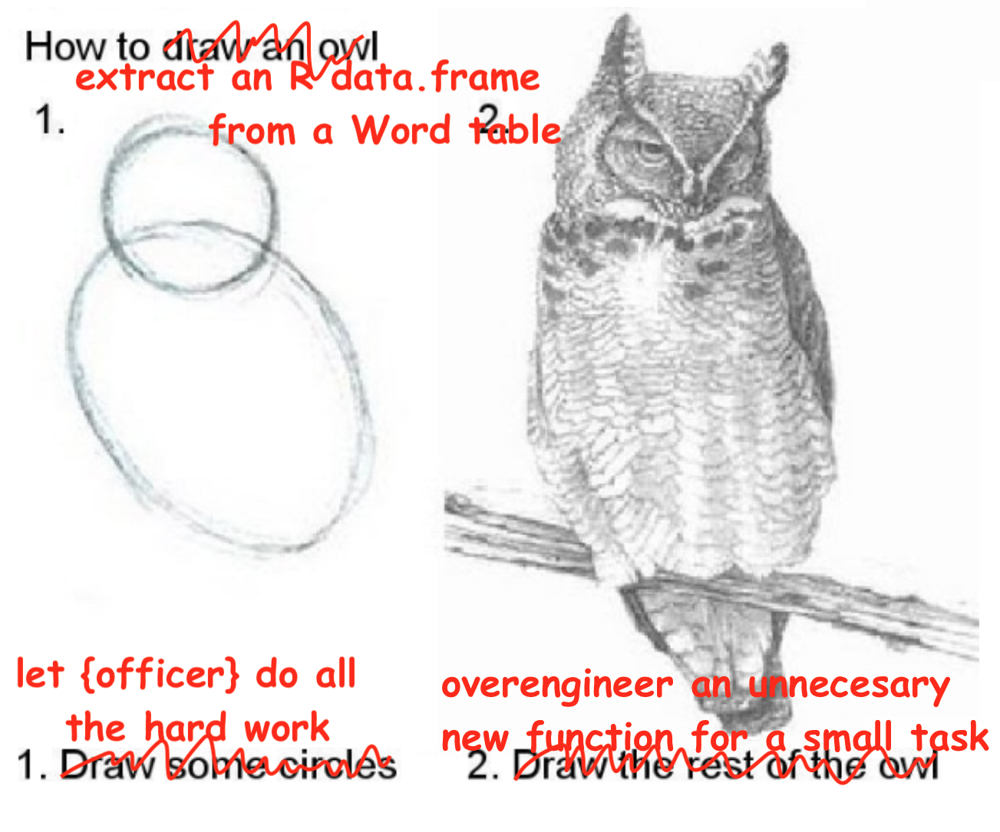

install.packages("officer") # if not yet installed
library(officer)
tl;dr
{officer} is an R package that lets you extract elements of a Word document, including tables, into a tidy dataframe. I’ve written a function to ‘re-rectangularise’ extracted Word tables into a list of R dataframes.
Note
Turns out that Eli Pousson has written the {officerExtras} package (install it from GitHub), which already contains this functionality in the officer_tables() and officer_table() functions. At least this proves my idea wasn’t too far-fetched!
Also you can just use docxtractr::docx_extract_all_tbls() by Bob Rudis to extract all the tables in one go, lol.
What’s the officer, problem?
Someone on Slack asked about some difficulty with scraping a table from a Word document. We’ve all been there.
My mind immediately went to {officer} by David Gohel, which is part of the ‘officeverse’ for reading, creating and manipulating common Microsoft documents with R1.
In particular, the function officer::docx_summary() extracts all the elements of a Word doc into a tidy dataframe2. Each row of that dataframe is a heading, or a paragraph, or the contents of a table cell3.
This means tables are ‘unstacked’, with a row per ‘cell’ of the original Word table. How could you convert these tidy Word tables into dataframes for further use in R? There’s a suggestion in the docs, but I drew the rest of the heckin’ owl by creating a slightly overengineered function to do it4.
’Allo ’allo
First, you can download the {officer} package from CRAN:
Let’s create a Word document to test with and save it to a temporary location:
# Create a test docx file
doc_test <- read_docx() |>
body_add_par("This is a test", style = "heading 1") |>
body_add_par("Below is a table.", style = "Normal") |>
body_add_table(mtcars[1:3, 1:5]) |>
body_add_par("Below is another table", style = "Normal") |>
body_add_table(airquality[1:3, 1:5])
# Save docx to temp location
temp_docx <- tempfile(fileext = ".docx")
print(doc_test, target = temp_docx)The package has a nice system of pipeable functions for building up document. This code created a file with a heading, followed by two tables that each have a line of text above them.
We can read the document with read_docx() and extract the contents into a tidy dataframe:
# Read the file from temp path
doc_path <- list.files(tempdir(), pattern = ".docx$", full.names = TRUE)
doc_in <- read_docx(doc_path)
# Get the content of the document as a dataframe
doc_tidy <- docx_summary(doc_in)
str(doc_tidy)'data.frame': 43 obs. of 11 variables:
$ doc_index : int 1 2 3 3 3 3 3 3 3 3 ...
$ content_type: chr "paragraph" "paragraph" "table cell" "table cell" ...
$ style_name : chr "heading 1" "Normal" NA NA ...
$ text : chr "This is a test" "Below is a table." "mpg" "21.0" ...
$ level : num NA NA NA NA NA NA NA NA NA NA ...
$ num_id : int NA NA NA NA NA NA NA NA NA NA ...
$ row_id : int NA NA 1 2 3 4 1 2 3 4 ...
$ is_header : logi NA NA TRUE FALSE FALSE FALSE ...
$ cell_id : num NA NA 1 1 1 1 2 2 2 2 ...
$ col_span : num NA NA 1 1 1 1 1 1 1 1 ...
$ row_span : int NA NA 1 1 1 1 1 1 1 1 ...The doc_in object has ‘rdocx’ class that carries the extracted elements and associated style information. Running docx_summary() converts this to the single tidy dataframe that we’re after.
You can see we have information here about the content of our doc. For purposes of this post, we care about:
text, which is the actual written contentcontent_type, which can tell us if we’re looking at table cellsdoc_index, which assigns an ID value so document elements stay together (e.g. cells of a table will all carry the samedoc_index)cell_idandrow_id, which tell us the x and y cell locations in tablesis_header, which can tell us if the row contains a table header.
Now to extract the table elements and ‘re-rectangularise’ back into a dataframe.
Cop a load of this
I’ve made two functions using base R:
rectangularise_tables()(note the plural) takes the dataframe provided bydocx_summary()and outputs a list of dataframes, one per table in the original Word file.rectangularise_table()(not pluralised and starts with a dot for disambiguation), which runs insiderectangularise_tables()to reformat the tidy representation of a single Word table into an R dataframe
You’ll need to copy both of these into your session and run them. For convenience, I’ve added them to a GitHub gist. I’ve added commentary so you can see what’s happening in each bit.
Click to expand the rectangularise_tables() definition.
rectangularise_tables <- function(
docx_summary, # output dataframe from docx_summary
assume_headers = TRUE, # assume headers in first row?
type_convert = TRUE # try to coerce columns to most likely data type?
) {
# Check inputs
is_data.frame <- inherits(docx_summary, "data.frame")
docx_summary_names <- c(
"doc_index", "content_type", "style_name", "text", "level", "num_id",
"row_id", "is_header", "cell_id", "col_span", "row_span"
) # column names we can expect in the output from docx_summary
is_docx_summary <- all(names(docx_summary) %in% docx_summary_names)
if (!is_data.frame | !is_docx_summary) {
stop(
paste(
"Argument 'docx_summary' must be a data.frame created with",
"'officer::docx_summary'."
),
call. = FALSE
)
}
# Get only the rows that relate to Word tables
docx_summary_tables <-
docx_summary[docx_summary[["content_type"]] %in% "table cell", ]
# Get the ID value for each Word table
doc_indices <- unique(docx_summary_tables[["doc_index"]])
# Initiate an empty list to hold dataframe representations of the Word tables
tables_out <- vector(mode = "list", length = length(doc_indices))
names(tables_out) <- paste0("doc_index_", doc_indices)
# For each Word table, 'rectangularise' into a dataframe and add to the list
for (doc_index in doc_indices) {
docx_summary_table <-
docx_summary_tables[docx_summary_tables[["doc_index"]] == doc_index, ]
extracted_table <- .rectangularise_table(docx_summary_table, assume_headers)
list_element_name <- paste0("doc_index_", doc_index)
tables_out[[list_element_name]] <- extracted_table
}
# Optionally convert columns to appropriate type (integer, etc)
if (type_convert) {
tables_out <- lapply(tables_out, type.convert, as.is = TRUE)
}
return(tables_out)
}
Click to expand the .rectangularise_table() definition.
.rectangularise_table <- function(
table_cells, # docx_summary output filtered for 'table cells' only
assume_headers = TRUE # assume headers in first row?
) {
# Check inputs
is_table_cells <- all(table_cells[["content_type"]] == "table cell")
is_one_table <- length(unique(table_cells[["doc_index"]])) == 1
if (!is_table_cells | !is_one_table) {
stop(
paste(
"Argument 'table_cells' must be a dataframe created with",
"'officer::docx_summary' where 'content_type' is filtered for",
"'table cell' only."
),
call. = FALSE
)
}
# Split each Word table into a list element, isolate headers and cell contents
cell_id_split <- split(table_cells, table_cells[["cell_id"]])
headers <- lapply(cell_id_split, function(x) x[x[["is_header"]], "text"])
content <- lapply(cell_id_split, function(x) x[!x[["is_header"]], "text"])
table_out <- as.data.frame(content)
# Column headers are identified by TRUE in the is_header column, but may not
# be marked up as such. Use them as dataframe headers if they exist.
has_headers <- length(unlist(headers)) > 0
if (has_headers) {
names(table_out) <- headers
}
# If headers are not identified by is_header, assume that the first row of the
# Word table contains the headers. The user can control this behaviour with
# the argument assume_headers.
if (!has_headers & assume_headers) {
headers <- table_out[1, ] # assume first row is headers
table_out <- table_out[2:nrow(table_out), ] # rest of table is content
names(table_out) <- headers
}
return(table_out)
}You’ll notice the assume_headers argument. The headers for a Word table are marked by TRUE in the is_header column of the output from docx_summary(). Except when they aren’t. It’s possible that you’ll read a Word doc where the table headers aren’t identified. Set assume_headers to TRUE (the default) to allow rectangularise_table() to instead use the first row of the table as headers. The setting will apply to all tables; I reckon that it’s all or nothing whether table headers will be marked up in a given Word document.
You may also have seen the type_convert argument5. By default, the text column in the output from docx_summary() will be character class, but the actual data might be integers, for example. As explained in a recent blog post, the type.convert() function attempts to coerce a column to the appropriate data type if possible.
And now we can see that the dataset works using our test document:
df_list <- rectangularise_tables(doc_tidy)
str(df_list)List of 2
$ doc_index_3:'data.frame': 3 obs. of 5 variables:
..$ mpg : num [1:3] 21 21 22.8
..$ cyl : int [1:3] 6 6 4
..$ disp: int [1:3] 160 160 108
..$ hp : int [1:3] 110 110 93
..$ drat: num [1:3] 3.9 3.9 3.85
$ doc_index_5:'data.frame': 3 obs. of 5 variables:
..$ Ozone : int [1:3] 41 36 12
..$ Solar.R: int [1:3] 190 118 149
..$ Wind : num [1:3] 7.4 8 12.6
..$ Temp : int [1:3] 67 72 74
..$ Month : int [1:3] 5 5 5Smashing. We have a list of two dataframes: one for each of the tables in the test document. I took the liberty of naming the list elements like doc_index_* so you can trace which doc_index they were in the original output from docx_summary().
PrisonR
To summarise, this is absolutely not the worst code-related crime I’ve committed on this blog. Sorry guv! I’ll definitely be sentenced to the most severe punishment if caught and tried: several minutes of hard labour, or ‘refactoring’ as they call it on the inside.
At worst I’ll build an Andy-Dufresne-style tunnel out of my prison cell and hide the entrance behind years of accumulated hex stickers.
Note
As a bonus, I later wrote a quick reproducible example that part-solves the original reason for this post. Here I’ve used {docxtractr} to extract tables from docx files in separate subfolders and then combine them.
Click to expand code.
# Attach packages (all are available from CRAN)
library(docxtractr) # to extract tables from docx files
library(officer) # to create dummy docx files
library(charlatan) # to generate fake data
# Create multiple dummy docx files in separate temporary folders
my_folder <- tempdir() # temporary locations to store the files
n_files <- 5 # the number of dummy files to generate
for (i in seq(n_files)) {
# Create subfolders
subfolder_name <- paste0("subfolder_", i)
dir.create(file.path(my_folder, subfolder_name))
# Create dummy dataframe
n_fake <- 10 # number of fake data items to generate
temp_df <- data.frame(
name = ch_name(n_fake),
job = ch_job(n_fake),
phone = ch_phone_number(n_fake)
)
# Add dummy dataframe to a docx file and save it
path <- file.path(my_folder, subfolder_name, paste0("df_", i, ".docx"))
officer::read_docx() |> body_add_table(temp_df) |> print(target = path)
}
# Get the file paths to all the docx files
docx_paths <- list.files(
my_folder,
pattern = ".docx$",
full.names = TRUE, # return full filepaths
recursive = TRUE # look in all subfolders
)
# Preallocate a list to be filled with extracted tables, one element per file
extracted_tables <- vector("list", n_files)
# Extract tables and add to the list (not tested: I think that read_docx will
# read .doc files, but only if you have LibreOffice installed.
for (i in docx_paths) {
tables <- docxtractr::read_docx(i) |> docx_extract_all_tbls()
extracted_tables[basename(i)] <- tables
}
# In this simple demo, the dataframes in each list element can be appended
# because they all have the same column names and types.
do.call(rbind, extracted_tables)Environment
Session info
Last rendered: 2023-07-17 18:05:37 BSTR version 4.3.1 (2023-06-16)
Platform: aarch64-apple-darwin20 (64-bit)
Running under: macOS Ventura 13.2.1
Matrix products: default
BLAS: /Library/Frameworks/R.framework/Versions/4.3-arm64/Resources/lib/libRblas.0.dylib
LAPACK: /Library/Frameworks/R.framework/Versions/4.3-arm64/Resources/lib/libRlapack.dylib; LAPACK version 3.11.0
locale:
[1] en_US.UTF-8/en_US.UTF-8/en_US.UTF-8/C/en_US.UTF-8/en_US.UTF-8
time zone: Europe/London
tzcode source: internal
attached base packages:
[1] stats graphics grDevices utils datasets methods base
other attached packages:
[1] officer_0.6.2
loaded via a namespace (and not attached):
[1] digest_0.6.31 R6_2.5.1 fastmap_1.1.1 xfun_0.39
[5] fontawesome_0.5.1 knitr_1.43.1 htmltools_0.5.5 rmarkdown_2.23
[9] xml2_1.3.5 cli_3.6.1 zip_2.3.0 askpass_1.1
[13] openssl_2.1.0 textshaping_0.3.6 systemfonts_1.0.4 compiler_4.3.1
[17] rstudioapi_0.15.0 tools_4.3.1 ragg_1.2.5 evaluate_0.21
[21] yaml_2.3.7 rlang_1.1.1 jsonlite_1.8.7 htmlwidgets_1.6.2
[25] uuid_1.1-0 Footnotes
Related: I have some experience with R-to-Excel: my {a11ytables} package generates best-practice spreadsheets using {openxlsx}.↩︎
It would be wrong for me not to point out that you can extract Excel and ODS cells into ‘tidy’ dataframes with Duncan Garmonsway’s {tidyxl} and Matt Kerlogue’s {tidyods}. No, they haven’t sponsored this post (invoices in the mail, chaps).↩︎
Merged cells in the table end up being unmerged, with the upper- and left-most cells holding the content and the remianing cells being assigned
NA.↩︎I did this for my own curiosity, really. Just like everything else on this blog! As mentioned, check out {docxtractr} and {officerExtras} for better implementations.↩︎
What a handy function. This was useful enough that Eli has now added it to {officerExtras}.↩︎
Reuse
CC BY-NC-SA 4.0